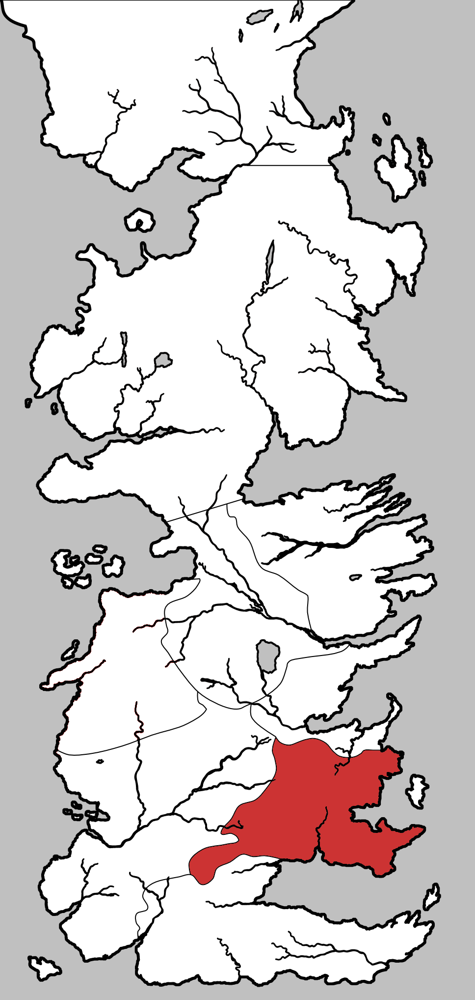

Stormlands
The Stormlands is one of the constituent regions of the Seven Kingdoms on the continent of Westeros. It was formerly a sovereign nation by the same name until the War of Conquest, in which the last Storm King was slain. The Stormlands are ruled from the castle of Storm’s End by House Baratheon. They are so-named for the savage and frequent storms that batter the coast. Bastards born in the Stormlands are given the surname Storm.
The Stormlands are located south of King’s Landing, bordered on the west by the lands of the Reach, south by the Sea of Dorne and to the east by Shipbreaker Bay. It is one of the smaller regions of Westeros, a land of harsh mountains, stony shores, and verdant forests, including the Rainwood and the Kingswood along Cape Wrath.
The Dornish Marches, located in the south-west, which stretches a long salient along the Red Mountains, serve as an effective buffer zone between the Stormlands and their old enemies of the Reach and Dorne. For centuries it was a regular battleground, changing hands more than once until Dorne became part of the Seven Kingdoms.
A few islands, including Tarth and Estermont, are also considered part of the Stormlands. Ships coming across the Narrow Sea avoid the notorious Shipbreaker Bay and its storms, though the seas along the Stormlands can be amazingly clear and blue. The waters around Tarth are particularly famed for their clear blue color, earning Tarth the name “Sapphire Isle.
Map on Next page.

Map on Next page.
